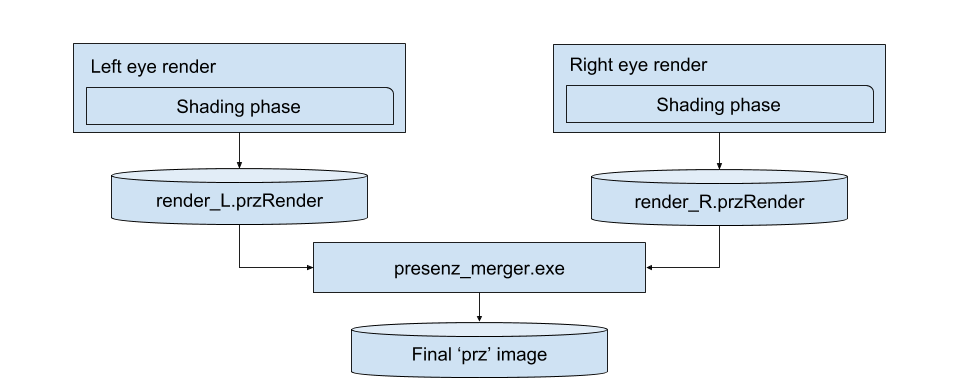

- Generated by
 1.9.1
1.9.1
|
PresenZ SDK
3.0.2
|
Another level of realism can be achieved if your render includes the right eye colors and the left eye colors in the same image. This is especially true if you intent to display your image in a VR headset.
Stereoscopy can be set up with :
PzSetDeepReflection(Eye::RC_LeftAndRight, 63.5f); // this value is in mm
It is very important that the up vector is correctly set in the set-up phase.
Stereoscopy is only relevant for the render phase.
PzBendRay leftEyeCamRay = PzGetBendRayRenderPhase(Eye::RC_Right, normal, camDir, hitPoint, distance); Color leftCol = myRenderer->shade(leftEyeCamRay, ...); PzBendRay rightEyeCamRay = PzGetBendRayRenderPhase(Eye::RC_Left, normal, camDir, hitPoint, distance); Color rightCol = myRenderer->shade(rightEyeCamRay, ...);
These color can be saved in the PzRenderSample with PzAddRightColorSampleAov() :
PzSetSampleColor(winSample, NozRGBA(leftCol.r, leftCol.g, leftCol.b, opacity)); PzAddRightColorSampleAov(winSample, NozRGB(rightCol.r, rightCol.g, rightCol.b);
If you can’t change the ray properties during shading, then it is possible to do two successive renders producing a render for the left eye and a render for the right eye. Presenz_merger.exe will assemble the left eye samples with the right eye samples.
PzSetDeepReflection(Eye::RC_Left, 63.5f); // this value is in mm
Both renders can be performed successively:
PzInitPhase(...);
PzSetDeepReflection(Eye::RC_Left, 63.5f); // this value is in mm
PzSetOutFilePath("render_L.przRender");
PzBeginPhase();
// do a render of the scene from the Left Eye here
// ...
PzTerminatePhase();
/////////////////////////////////////////////////////////////////////////
PzInitPhase(...);
PzSetDeepReflection(Eye::RC_Left, 63.5f); // this value is in mm
PzSetOutFilePath("render_R.przRender");
PzBeginPhase();
// do a render of the scene from the Right Eye here
// ...
PzTerminatePhase();
The general flow then becomes :
